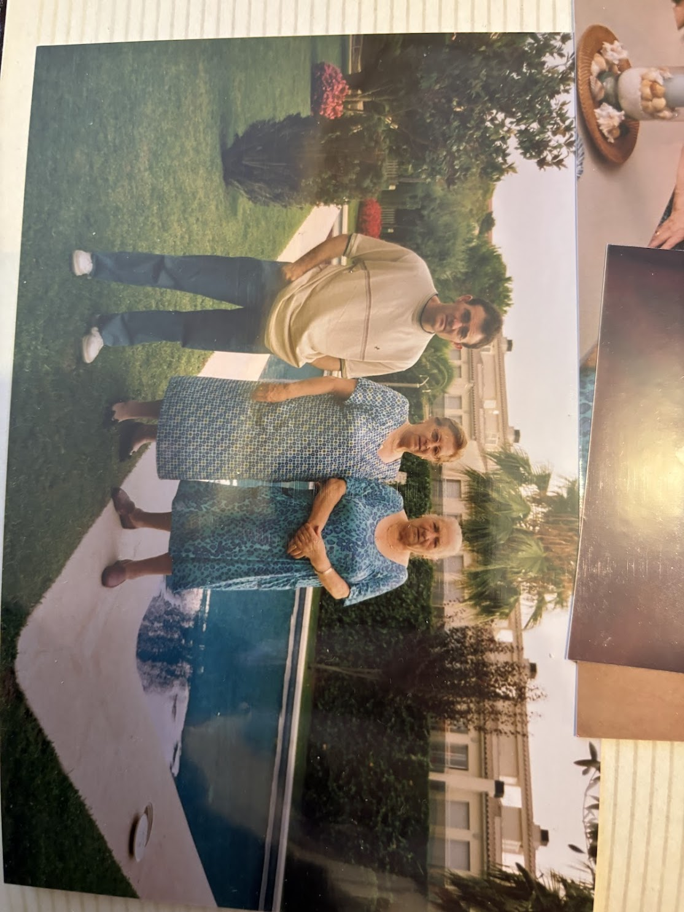

What They Taught Me
The wisdom of four people who migrated for a better life, worked with their hands, and gave everything to their grandchildren.
For BlancaBlanca, by the time you read this, the world will move even faster than it does today. You'll have AI that can answer any question in seconds. You'll wonder why things should take time.
This page is here to remind you: some things can't be rushed. The people below — your great-great-grandparents — knew that. They worked their whole lives so you could have choices they never had.
Ask them a question. See what they'd say.
Ask a question
Your great-great-grandparents

Angeles
From Zaragoza
Cook for a wealthy family

Antonio
From Valencia
Gardener

Avelino
From Murcia
Barber, bus driver, butcher
Merce
From Santomera
Opened the butcher shop